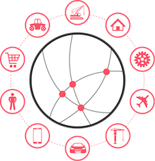
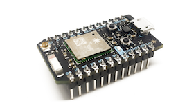
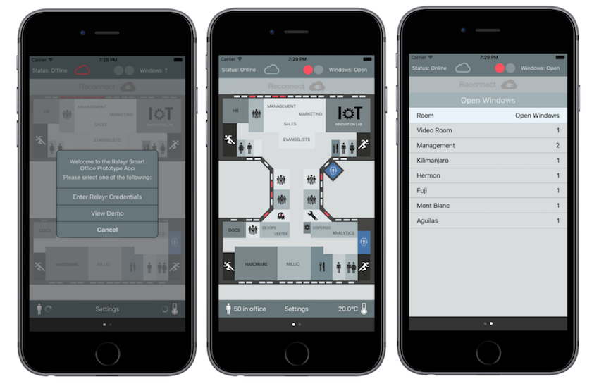

I would never have imagined, one year ago at the start of my freshman year, that the “Internet of Things”, Princeton and Berlin would come together to introduce me to a new world of technical possibilities, in more ways than one. This summer, through the generous help of the Summer Work Program and the Princeton Alumni Association of Germany, I spent three months in the capital of Germany interning at relayr.io, an “Internet of Things” (IOT) tech startup co-founded by Jackson Bond ‘91. With Princeton on the forefront of the IOT phenomenon as a founding member of the OpenFog Alliance, it's important to understand how this emerging technology works and what it can do for us in our 21st century society. Here is how Jackson explained the business relevance of IOT technology, when I first joined relayr a few months ago:
Imagine you have a company that owns 100,000 vending machines spread throughout the world. What if, instead of wasting energy, manpower, and money on sending out people to check on machines in remote locations, you could install sensors to do the job for you? You could attach an accelerometer to detect unusual movements, perhaps indicative of vandalism, or even proximity sensors inside to detect fill levels. Now, checking the status of the vending machines would be as simple as going online to check the data they are sending to the cloud. You could check which machines need servicing from the comfort of your home, or even send automatic notifications to the right people in the right locations when one of your products needs servicing. For the first time ever, we can bring massive savings and efficiency gains across the ecosystem of vending machines, i.e. for the machine manufacturers, the vending machine maintenance companies, the day-to-day users of the machines, the companies who provide products inside the machines and the property owners who allow vending machines to be installed on their land. All parties have immediate data on the performance of the machines, provided via Internet-enabled sensors that are both cheap and durable. The vending machine is just the beginning - it's just one of a million examples of the Internet of Things in action.

At relayr, I’ve experienced the excitement of working at a startup that focuses neither solely on software nor on hardware, but instead on IOT, the convergence of both that is rapidly becoming the next wave of technology. In my first weeks, I worked on a retrofit kit for a global appliance manufacturer that allows users to monitor their home appliances. The kit, a small box that you attach to the side of your washing machine or on top of your stove, senses vibrations, heat and other external stimuli and sends the collected data to the relayr cloud. If you forget to turn off your stove and leave your home, you receive a notification on your mobile device alerting you of a possible fire hazard. Or, even more simply, you can check if the dishwasher or dryer has finished its cycle from an app on your mobile device.

Relayr’s goal in the coming months is to innovate and shape the world with the potential that IoT provides, making our lives safer, easier, and more efficient. As part of my role in the developer evangelist team, I worked on a Smart Office prototype mounting and connecting sensors to the cloud. Then, I created an iOS app called Office IoT that lets you monitor the status of a building. With this application, you can see everything from how many people there are in the office to exactly which windows are open and the current ambient temperature, all from your smart phone.

The Office IoT prototype has nearly endless potential - from helping to monitor if potted plants have to be watered using humidity sensors to checking the availability of bathrooms in the building. Furthermore, the technology behind Office IoT can also be used for more commercial purposes. For example, in the coming weeks, we plan develop a Smart Shelf app that will use load sensors to detect how much of a given product a store has in stock. A tool like this would save supermarkets money and time, enabling them to order more stock only when it is truly necessary, all the while drastically reducing food and energy waste.
With the Internet of Things, users can increase their efficiency, improve their daily lives, and further connect themselves to their environment. Although apps like Office IoT focus on relayr’s office in Berlin, they can be optimized to serve any home or commercial enterprise, all with the help of relayr’s unique cloud technology. We hope that showing the world what we can do in our Berlin office will inspire others to invest in IoT, to solve physical problems with easy-to-implement cloud solutions and improve the world that we live in.
Looking back, I am very fortunate for the opportunity I was given these past months in Berlin. Not only was it a valuable learning experience, leaving me with new tools and skills for the future, but it introduced me to an emerging industry that will shape the world in the years to come. At relayr, I was allowed and encouraged to pursue my interest in iOS development, mentored closely by the company's lead mobile developer. I took advantage of our company workshops, learning about topics ranging from IOT protocols to the newest 4G and 5G telecommunication technologies, as seen by experts at the forefront of their fields. Furthermore, I gained an important insight into what it is like to found and run a booming startup, from casual discussions with Jackson to lunch with relayr’s CEO, Josef Brunner. Thank you to Princeton and relayr for this fantastic opportunity!